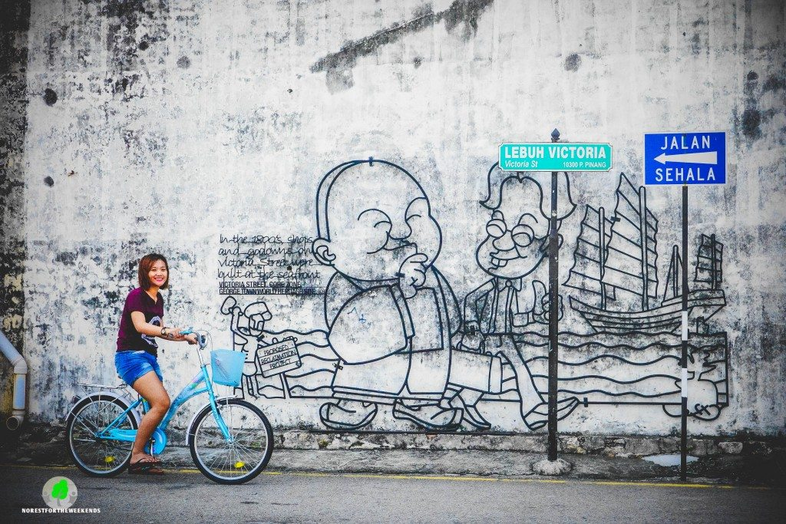
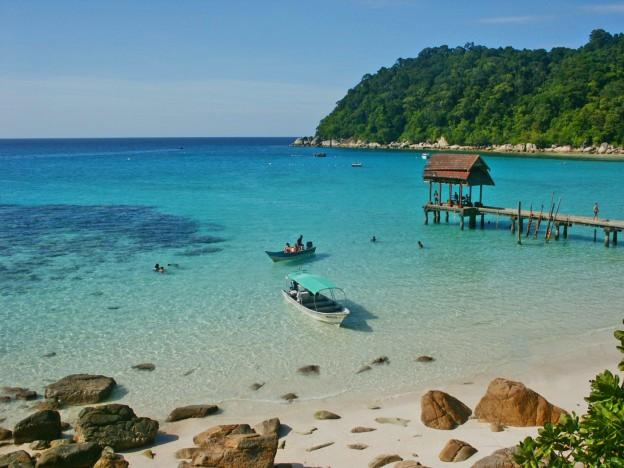
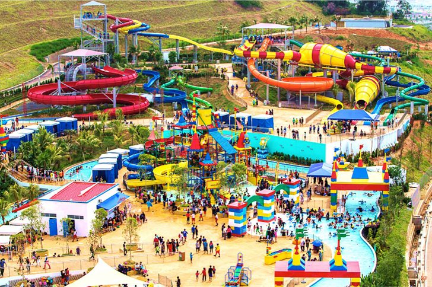

A'Famosa Resort
Malacca

A'Famosa Resort is named after A Famosa, a fort that now serves as a remnant of Malacca's past as a colony of the Portuguese. The resort boasts attractions such as the A'Famosa Animal World Safari which is home to more than a hundred species of animals. Also popular are the sprawling 20 acres A'Famosa Water World and the A'Famosa Cowboy Town which feature amenities such as restaurants, retail and outlets. A nightly festival is held in the Cowboy Town which features fireworks, dancing and a musical animal parade.

Georgetown
Penang
Penang
Georgetown is a UNESCO World Heritage site, officially recognised for its unique architecture and cultural townscape. A socially diverse and culturally-rich town, there is much to see and do here in the many ethnic enclaves present here such as Little India, Chinatown and Kampong Siam. For the more progressive lovers of culture and art, you may find pleasure in hunting for the various street arts that line the walls of buildings all over Georgetown.

Gunung Stong State Park
Kelantan
Kelantan
Gunung Stong State Park with its bounty of mountain peaks, waterfalls and caves. One of its most famous landmarks is the seven-tiered Strong Waterfalls - reputed to be the highest in Southeast Asia. Also popular are the series of prehistoric caves known as the Dabong limestone caves which were formed more than 225 million years ago!

Kuching City
Sarawak
Sarawak
Kuching City or literally Cat City is the biggest city in the state of Sarawak. Kuching is well known for its lush greeneries and vegetation which makes it a haven for an outdoorsman. Visitors may choose to rough it out at one of the kayaking or trekking trails or immerse themselves in the lush greeneries of the Semmengoh Nature Reserve and have a go at feeding the orangutans. Another popular natural attraction are the show caves Fairy Cave and Wind Cave where visitors can enter to marvel at the majestic interior and also wildlife that call those caves their home.

Langkawi
Kedah
Kedah
Langkawi is officially known as Langkawi the Jewel of Kedah. It is an island off the coast of Kedah and the largest island of the island chain, known as Langkawi Islands. The island is host to a number of attractions such as the Underwater World Langkawi, the Langkawi Sky Bridge, the Langkawi Bird Paradise and the Langkawi Cable Car that takes you all the way up Mat Cincang, a mountain that offers you breathtaking views of the rainforest, islands and the beautiful waters below!

Legoland
Johor
Johor
The first Legoland to set up operations in Asia, this sprawling theme park is located in Nusajaya, Johor. Officially opened, it has over 40 attractions including a water theme park, a retail store and the Legoland Hotel.

Lost World of Tambun
Perak
Perak
Located at the foot of the ancient Tambun Caves (further enhances the theme of the park), the Lost World of Tambun features ruins of a lost and ancient civilisation. On top of the water theme park, Lost World of Tambun also has a theme park consisting of dry rides, a petting zoo, the Lost World Tin Valley where visitors can learn about Malaysia�s rich heritage of tin mining, and the Lost World Adventure Park - for those looking for something more adventurous! Think abseiling, zip-lining or even participating in their Super Adventure Race!

KLCC
Kuala Lumpur
Kuala Lumpur
The Petronas Twin Towers are recognised the world over as an icon of Kuala Lumpur and Malaysia. Completed in 1998, the 88-floor Twin Towers are the tallest structures in Malaysia and were the tallest buildings in the world from 1998 to 2004. Until today, they are still the tallest twin towers in the world. A trip to KL is incomplete without a visit to the Twin Towers and even a walk on the Skybridge that connects the two towers on the 42nd floor.

Mount Tahan
Pahang
Pahang
Mount Tahan is the Mount Everest of the Malaysian Peninsula. Being the highest peak in the country, it naturally becomes a favourite with climbers around the region. True to its name, Mount Tahan (literally Mount Endure) takes a certain level of endurance to overcome. It is also considered by many to be one of the toughest treks in Peninsula Malaysia.

National Zoo of Malayia
Selangor
Selangor
Home to 5137 animals of 459 different species, the National Zoo of Malaysia was officially opened on the 14th of November 1963. The zoo consists of 16 themed exhibits such as the Bear Complex, Nile Hippopotamus, Insect Zoo and Reptile Park.

Port Dickson
Negeri Sembilan
Negeri Sembilan
Touted as having some of the best beaches in Malaysia, tourists flock to this part of the state to enjoy its long stretch of beaches. It is also home to a special sort of attraction in the form of an ostrich farm. The PD Ostrich Show Farm is a great place for anyone to learn about ostriches and also how these great birds are reared! Besides Ostriches, also on exhibition are peacocks and monkeys just to name a few and visitors can even get a chance to feed some of the animals - it promises to be a fun experience for everyone.

Sepilok Orang Utan Rehabilitation Centre
Sabah
Sabah
The Sepilok Orang Utan Rehabilitation Centre was founded in 1964 with the aim of rehabilitating orphaned orang-utans with the wider aim of conservation in mind. This facility provides medical and rehabilitative care to not only orang-utans but also to other species of animals. This place is a good platform for visitors to interact with orang-utans during feeding time and also learn more about the importance of conservation in general!

Snake and Reptile Farm
Perlis
Perlis
This is one of the more unique attractions not only in Perlis, but in the whole of Malaysia. It is a research facility for the production of antivenom, which show cases about 200 snakes of 34 different species from Malaysia, and also all over the world. Visitors are also treated to sights of other reptiles and animals such as crocodiles, lizards, horses and even turtles.

Redang Marine Park Centre
Terrenganu
Terrenganu
Pulau Redang Marine Park is a cluster of islands that is being protected under the cause of marine conservation. Snorkelers of all competencies get to enjoy the sights of corals, fishes and the other denizens of a coral reef habitat that thrive in the clear and calm blue waters. A word of caution, as this is a protected park; it is strictly prohibited for visitors to remove or damage corals or wildlife.